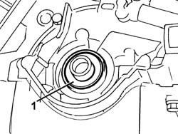
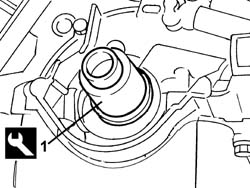

1020D20 front crankshaft cover oil seal - replace for versions with air conditioner
- Path
- Procedures > 10 ENGINE > 1020 CRANKCASE SUMP AND COVERS > 1020D OIL SEALS ON CRANKSHAFT > 1020D20 front crankshaft cover oil seal - replace for versions with air conditioner
- Kind
- repair procedure (removal / refitting; the operation number is the code)
- Applies to
- all engines; all production periods
- Interactive page
- https://sloeber94.github.io/elrnDB-fDbl/en/#/2584177
Applies to: all engines; all production periods
 Removing
Removing
 Refitting
RefittingPlace the car on a ramp.
7055B54 under-engine guard - r r
1048A10 air cleaner filtering element - replace
1032D12 timing system protective cover(s) - r + r
1092B68 belt from a/c compressor to alternator drive r + r
1092C11 power steering pump drive belt - r r for versions with air conditioner
1092D10 air conditioner compressor drive belt - r + r
1092A12 crankshaft pulley - r+r for versions with air conditioner
1032B44 toothed drive pulley - r + r with timing belt removed
1. Prise up and remove the crankshaft front cover sealing ring

Applies to: all engines; all production periods
Refitting
Removing1. Use the appropriate tool to fit a new oil sealing ring to the crankshaft front cover.
 | Name | Country |
|---|---|---|
1 | Fitting tool | 1.860.990.000 |

Applies to: all engines; all production periods
1032B44 toothed drive pulley - r + r with timing belt removed
1092A12 crankshaft pulley - r+r for versions with air conditioner
1092D10 air conditioner compressor drive belt - r + r
1092C11 power steering pump drive belt - r r for versions with air conditioner
1092B68 belt from a/c compressor to alternator drive r + r
1032D12 timing system protective cover(s) - r + r
1048A10 air cleaner filtering element - replace
7055B54 under-engine guard - r r
Remove the vehicle from the ramp.
Topics linked from this page (11)
- 1032B14 toothed timing belt - r + r for timing adjustment or replacement versions with air conditioner
- 1032B44 toothed drive pulley - r + r with timing belt removed
- 1032D12 timing system protective cover(s) - r + r
- 1048A10 air cleaner filtering element - replace
- 1092A12 crankshaft pulley - r+r for versions with air conditioner
- 1092B68 belt from a/c compressor to alternator drive r + r
- 1092C11 power steering pump drive belt - r r for versions with air conditioner
- 1092D10 air conditioner compressor drive belt - r + r
- 2110a60 manual gearbox/engine coupling bracket - r+r
- 4450B04 right front wheel r r
- 7055B54 under-engine guard - r r